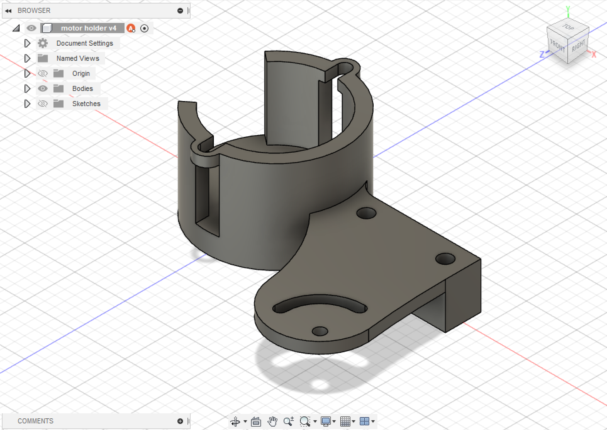

Aaron Jenson
Sand Table
click here to skip all the excuses for my poor workmanship and see the final product
tl;dr i need your help to support my bad purchasing decisions, please vote for my project at https://www.uwmakersummit.com/
Several months ago, I watched a YouTube video of a tour of a machine shop with Michael Dubno. During that tour, they showed of a couple projects Michael had created in his shop, one of which was an insanely cool coffee table that could draw things almost by magic! Underneath some glass, there was a bed of sand and a single steel ball. A set of magnets under the bed of sand could move the ball anywhere on that bed, leaving behind a path in the sand that would then turn into pictures and patterns. The coolest part (at least in my opinion) was that it was hooked up to a voice assistant, meaning someone could just ask Alexa to draw something on the table and it would search Google for an image, convert it to a path for the machine, and draw it. So that was pretty cool, and while it seemed like a challenge, the concept wasn't that crazy, just a two axis system with some magnets and a table on top of it. I put that idea on top of my long list of future projects, and then proceeded to find lots of excuses not to start on it yet.
The youtube video of Michael Dubno's workshop
Fast forward to January, and due to a few unnecessary Amazon purchases and returns, I had some Amazon credit that needed to be used. I found a nice set of small stepper motors while browsing through Amazon, and realized that they would probably be just the right size for a small sand table. So I ordered them and once again, didn't actually start working on the project yet.
Then around early March, UW HFS Perks and Rec began announcing their Maker's Summit event, where there would be a competition between all the cool stuff that people built and created. It seemed like making a nice drawing sand table would be a great project to submit, and maybe if I was really lucky I could even win some money off of it! With that I finally started planning out how I could actually make this happen.
Step 1: choose and buy the supplies
I already had some stepper motors. But there was a lot more stuff that I was going to need to make the whole table, so I started by writing out a list of all the supplies I would need. I knew that a lot of the pieces were going to be 3D printed, since that would be cheaper than buying some things. The initial list looked something like this:
- motors [x]
- belts
- bearings
- slip ring
- limit switch
- power supply
- fan
- LEDs
- bolts
- sand
- magnets
- ball
- linear rail
I had a timeline of about 3 weeks to finish this project, so while it would have been cheapest to order everything from AliExpress and wait the month or two that it would take for it all to arrive, I decided that I would have to buy it all from Amazon so I could have the 2 day shipping. Unfortunately, this increased the cost quite a bit... So after adding over $150 dollars worth of parts to my cart, I started to pick through my list and remove some things that weren't strictly necessary. The LEDs were one of the first things to go, since they were totally optional, and then the power supply. I already had some wall brick power supplies that were powerful enough to work for the time being, so I figured I could buy a real power supply later and add it on to the build.
Step 2: design the movement mechanism
You might have noticed on the shopping list up above that I included a slip ring. One of my goals for this project was to maximize the drawing area by letting the ball reach as far out to the edge of the table as possible. In every Cartesian (rectangular) system I've seen implemented, there's a pretty significant border around the main drawing area where the magnets can't reach and nothing can be drawn. However, in the tables sold by Sisyphus Industries, they use a circular design that lets the ball move nearly all the way to the edge. So I decided I was going to design my table as a circle with a polar movement system underneath. This meant that I would either need coaxial movement for rotation and linear motion, or one of the motors would have to be mounted on the part that rotates. The second option was much simpler to design, so I chose that one, but to allow the system to rotate without any bounds I needed a slip ring. Slip rings let you connect things electrically through rotational joints without any limit to the amount of rotation.
So anyway, that was basically just a long explanation to say that my design needed to rotate freely and I bought a thing to let it do that.
Several years ago I bought a crappy little 3D printer that I've only recently been able to get running well, and that thing definitely got worked hard while I was building this. I needed to design and print a whole bunch of parts such as
- pulleys to interface a motor to a belt
- a carriage to hold magnets onto a linear rail
- a pulley to attach an axle and a linear rail to each other
- adjustable limit switch holders
- motor mounts
- belt tensioning systems
An experienced engineer might be able to design a full system in a few hours, print out each part, make some minor adjustments, and have a working system within just a couple of iterations, but I am nowhere close to an experienced engineer. So I started with some very rough designs, printed them out, made some rough adjustments, and kept repeating that process many, many times. I often started out making a part by designing the very minimum concept, then slowly adding in more features until it worked well enough for me. My first designs started off with good CAD practices, using parameters and fully constrained sketches, but as I kept working the good design principles were abandoned and I started to just accept anything as long as it looked good. And after 3-4 days worth of designing and a big pile of prototype parts, I had a system assembled that seemed like it might actually work alright (for a version 1.0, that is).
|  | |||
| center pulley and axle | base with motor mount | magnet holder carriage | linear rail motor holder |
Step 3: build the table
Here's where things started to fall apart a bit. I had this idea for a circular table that would have a glass top and a really nice curved wood edge, but by the time I finished the mechanism and moved onto the table, I had two days left before the deadline and only one day's worth of shop time available to me. But I had to try and build something, so I borrowed my roommate's car, bought a mahogany plank and some plywood, and set out to the shop to build the table.
My plan was to use kerfing to bend the board into the side of the table. This process involves cutting deep slots into a piece of wood at a fixed distance apart (usually 2-4 slots per inch) and then bending the wood into whatever shape you're trying for. I'd seen people do this in YouTube videos and it looked doable, so I figured I would try it. Turns out I probably should have tried it once or twice before going for it on the final table, since my measurements were off and the side didn't quite wrap around the whole table, leaving a half an inch gap in the edge. I also wasn't very smart about clamping the piece while the glue was drying, so the final shape was kind of warped. After drilling some holes with a file, assembling the 3D printed parts, and mounting them onto the base of the table, I had something that looked a little bit like a table - sans legs, and in two separate pieces, but still a sort of table, I guess.
the fully assembled and soldered magnet moving mechanism
the assembled table with all of its issues
Step 4: software
With one day left, I started on the programming. I copied some code from an example on using the AccelStepper library, and wrote a simple loop to go to each position in an array. To make generating paths simpler, I decided to use thr files as the basis for path storage. These files are essentially just lists of angles and distances from the center point, with a very small step between each point. There's an open source tool at sandify.org that can generate paths in various formats including thr files, meaning I could skip writing that code.
generating a rose pattern with sandify
And now I started running into more problems. The Arduino has a very limited memory available, so with the setup of storing an array in the code, I could only run paths that went a few times around the table. My goal was to run much longer paths, but I was an hour away from the deadline and my SD card that I had planned to store paths on wasn't working for some reason... I kept working, but 10 minutes before the deadline I had to call it with no more progress on that issue. I submitted what I had so far with a short video clip of it drawing a simple spiral, and went to sleep.
The next morning I kept on working, and with a few hours of work and a reformatted SD card, everything started coming together. Now I could put thr files on the SD card, move the card to Arduino, and it would play through each pattern on the card. I spent a while generating some patterns and testing them out, and started thinking of all the things I want to do differently in version 2.
the code
The final result
So here it is, in all its glory! Let me give you a quick rundown of its features:
- looks like magic with a hidden mechanism
- SD card support for lists of patterns
- integrated cooling vent in the side
- exposed electronics for added educational value
- lots of ways to stop operation in case of malfunction
- strategic belt skipping draws patterns in a different place every time
- table base made of 3D printer filament rolls and breadboard to fit the theme
- high noise levels make sure you never leave it running by mistake
- no user interface on the device itself means no need to learn a new UI
- precise homing control due to manual zeroing process
- low speed drawing to avoid distracting nearby people
- runs off a single 6V battery pack
a hyperlapse (30x speed) of a pattern drawing
Anyway, it's got issues, but I've learned a lot and version 2 will definitely be a lot better.
plz vote for me
This is entered into a contest, so if you're reading this before April 7th, 2022 at 8am PST, please go to UW Maker Summit and vote for me. My project is Gizmos #6, and even though the voting form asks for first through third choices in every category, you don't have to fill them all out. You can just pick one option for one category, or look through the other submissions because there are some other pretty cool projects out there. (You may have to be a UW student signed into your UW account to vote.)